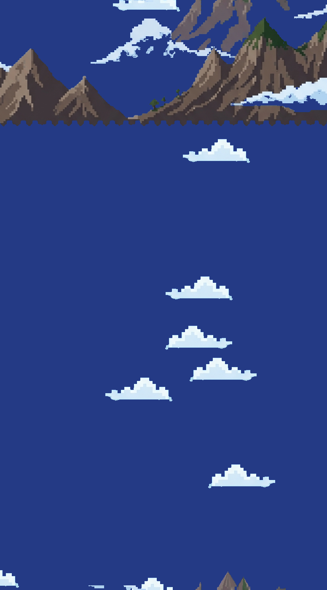
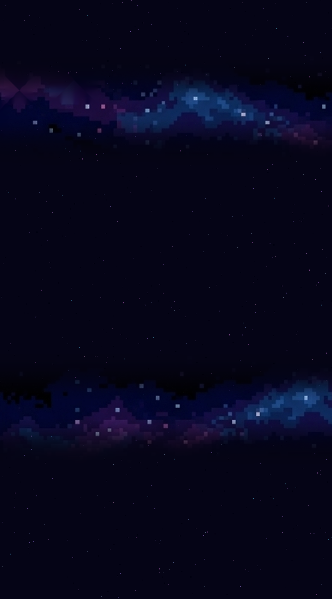
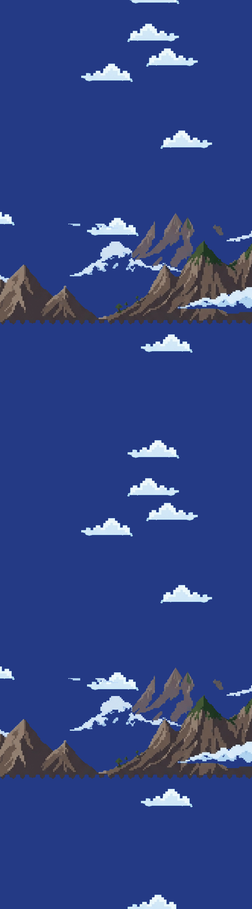
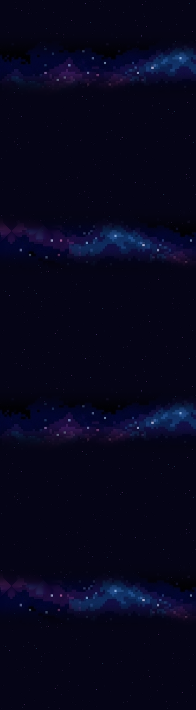

<title>배경 타일 시험 결과</title>
<meta charset="utf-8">
<style>
  :root{
    --bg:#f7f6f3; --card:#fff; --ink:#1c1b19; --muted:#6b6862;
    --line:#e3e0da; --accent:#c2410c; --ok:#15803d; --warn:#b45309;
  }
  @media (prefers-color-scheme:dark){:root:not([data-theme="light"]){
    --bg:#16151a; --card:#1f1e24; --ink:#eceaf0; --muted:#a3a0ab;
    --line:#33313b; --accent:#fb923c; --ok:#4ade80; --warn:#fbbf24;
  }}
  :root[data-theme="dark"]{
    --bg:#16151a; --card:#1f1e24; --ink:#eceaf0; --muted:#a3a0ab;
    --line:#33313b; --accent:#fb923c; --ok:#4ade80; --warn:#fbbf24;
  }
  body{background:var(--bg);color:var(--ink);font:16px/1.65 "Malgun Gothic","Segoe UI",system-ui,sans-serif;
       margin:0;padding:40px 20px 80px}
  main{max-width:880px;margin:0 auto}
  h1{font-size:28px;line-height:1.3;margin:0 0 6px;letter-spacing:-.02em}
  .sub{color:var(--muted);margin:0 0 36px;font-size:14px}
  h2{font-size:19px;margin:44px 0 14px;padding-bottom:8px;border-bottom:2px solid var(--line)}
  h3{font-size:15px;margin:26px 0 8px;color:var(--accent)}
  section{background:var(--card);border:1px solid var(--line);border-radius:12px;padding:4px 24px 24px;margin-bottom:8px}
  .tw{overflow-x:auto;margin:14px 0}
  table{border-collapse:collapse;width:100%;font-size:14px;min-width:460px}
  th,td{padding:7px 10px;text-align:left;border-bottom:1px solid var(--line);vertical-align:top}
  th{font-weight:600;color:var(--muted);font-size:12.5px;text-transform:uppercase;letter-spacing:.04em}
  td.n{text-align:right;font-variant-numeric:tabular-nums}
  tr:last-child td{border-bottom:none}
  code{background:var(--bg);border:1px solid var(--line);border-radius:4px;padding:1px 5px;font-size:13px;
       font-family:Consolas,"Cascadia Mono",monospace}
  ul{padding-left:20px} li{margin:6px 0}
  ol{padding-left:22px} ol li{margin:8px 0}
  .tag{display:inline-block;font-size:12px;padding:2px 9px;border-radius:99px;border:1px solid currentColor;
       font-weight:600;vertical-align:middle}
  .ok{color:var(--ok)} .warn{color:var(--warn)} .bad{color:var(--accent)}
  .note{border-left:3px solid var(--warn);background:var(--bg);padding:12px 16px;border-radius:0 8px 8px 0;margin:16px 0}
  .note p{margin:6px 0}
  .lead{font-size:17px}
  figure{margin:0}
  .shots{display:flex;gap:18px;flex-wrap:wrap;margin:18px 0}
  .shot{flex:1 1 200px;min-width:170px;max-width:250px}
  .shot img{width:100%;display:block;border:1px solid var(--line);border-radius:8px;background:var(--bg);
            image-rendering:pixelated}
  .shot figcaption{font-size:12.5px;color:var(--muted);margin-top:8px;text-align:center;line-height:1.5}
  .seamline{position:relative}
  .seamline::after{content:"";position:absolute;left:0;right:0;top:50%;height:0;
                   border-top:1px dashed var(--accent);opacity:.75}
  .badge{display:inline-block;font-size:11px;padding:1px 7px;border-radius:99px;
         background:var(--accent);color:#fff;font-weight:700}
</style>

<main>
<h1>배경 타일 시험 결과</h1>
<p class="sub">심심할 때 하는 게임 · 점프점프 · 2026-09-07 · 원본 <code>BG_01~03.png</code> 그대로 두고 <code>BG_시험\</code> 에만 생성</p>

<section>
<h2>1. 한 줄 요약</h2>
<p class="lead">지금 3장에서 <strong>구름 · 산맥 · 별밭을 뽑아내 896&times;1400 세로 타일 3장</strong>을 만들었습니다.
<strong>세 장 모두 세로로 무한 반복해도 이음매가 보이지 않습니다.</strong>
쓸 만한 수준까지는 나왔고, 아래에서 직접 확인해 보신 뒤 이대로 갈지 새로 뽑을지 정하시면 됩니다.</p>

<div class="note">
<p><strong>원본은 하나도 건드리지 않았습니다.</strong>
<code>Assets/JumpJump/Art/Background/BG_01~03.png</code> 는 그대로 있고,
결과물은 전부 <code>D:\00.JumpJump\BG_시험\</code> 에 새로 만들었습니다.</p>
</div>
</section>

<section>
<h2>2. 결과 <span class="tag ok">직접 봐 주세요</span></h2>
<p>아래는 <strong>폰 화면에 실제로 보이는 딱 한 화면</strong>입니다 (776&times;1400 = 게임에서 보이는 범위).
일부러 <strong>반복 이음매가 그림 정확히 한가운데(<span class="badge">주황 점선</span>)에 오도록</strong> 굴려 놓았습니다.
<strong>가운데에 가로줄이 보이지 않으면 성공</strong>입니다.</p>

<div class="shots">
<figure class="shot">
  <div class="seamline"></div>
  <figcaption><strong>BG_01 평야</strong><br>0 ~ 200 m</figcaption>
</figure>
<figure class="shot">
  <div class="seamline"></div>
  <figcaption><strong>BG_02 산</strong><br>200 ~ 500 m</figcaption>
</figure>
<figure class="shot">
  <div class="seamline"></div>
  <figcaption><strong>BG_03 우주</strong><br>500 m 이상</figcaption>
</figure>
</div>

<h3>세로로 2장 이어 붙였을 때</h3>
<p>같은 그림이 반복되는 리듬이 어떤지 보는 용도입니다. 산맥과 성운은 <strong>화면 하나에 한 번씩</strong> 지나갑니다.</p>
<div class="shots">
<figure class="shot"><figcaption>BG_01 &times;2</figcaption></figure>
<figure class="shot"><figcaption>BG_02 &times;2</figcaption></figure>
<figure class="shot"><figcaption>BG_03 &times;2</figcaption></figure>
</div>
</section>

<section>
<h2>3. 숫자로 본 이음매</h2>
<p>맨 아랫줄과 맨 윗줄의 색 차이를, <strong>그림 안쪽에서 이웃한 줄끼리의 평균 차이</strong>와 비교했습니다.
비율이 <strong>1 근처거나 그 아래면 "이음매가 다른 곳과 구별되지 않는다" = 안 보인다</strong>는 뜻입니다.</p>
<div class="tw"><table>
<tr><th>파일</th><th class="n">원본 이음매차</th><th class="n">시험본 이음매차</th><th class="n">보통 줄 간 차이</th><th class="n">비율</th><th>판정</th></tr>
<tr><td>BG_01 평야</td><td class="n">107.2</td><td class="n">0.21</td><td class="n">0.71</td><td class="n">0.30</td><td class="ok">안 보임</td></tr>
<tr><td>BG_02 산</td><td class="n">92.4</td><td class="n">1.57</td><td class="n">0.80</td><td class="n">1.96</td><td class="ok">안 보임 *</td></tr>
<tr><td>BG_03 우주</td><td class="n">77.6</td><td class="n">0.00</td><td class="n">0.30</td><td class="n">0.00</td><td class="ok">안 보임</td></tr>
</table></div>
<p><span class="tag" style="color:var(--muted)">*</span> BG_02 의 1.57 은 <strong>구름 하나가 위아래 경계를 타고 넘어가도록 일부러 걸쳐 놓았기</strong> 때문입니다.
끊긴 게 아니라 <strong>아래쪽에서 잘린 구름이 위쪽에서 정확히 이어집니다.</strong> 그래서 눈에는 안 보입니다.</p>
</section>

<section>
<h2>4. 각 장에 무엇을 했나</h2>

<h3>BG_01 평야 &mdash; 지면을 버리고 구름만 살렸습니다</h3>
<div class="tw"><table>
<tr><th>구분</th><th>내용</th></tr>
<tr><td>살린 것</td><td>원본 하늘의 <strong>구름 그림 그대로</strong>. 원본에서 온전한 구름은 딱 1개뿐이라(나머지는 그림 위쪽 끝에 잘려 있음)
    그 1개를 <strong>좌우 반전 · 2배 확대 · 절반 축소 · 둘씩 뭉치기</strong> 로 4가지로 늘려 26개 배치</td></tr>
<tr><td>버린 것</td><td>아래쪽 <strong>잔디·흙 지면 띠</strong> (y 238 아래 전부)</td></tr>
<tr><td>바꾼 것</td><td>위아래로 변하던 하늘 그라데이션을 <strong>단색 (1,186,233) 으로 통일</strong>.
    이게 반복을 가능하게 만든 핵심입니다</td></tr>
</table></div>

<h3>BG_02 산 &mdash; 잘려 있던 봉우리 끝을 세워 붙였습니다</h3>
<div class="tw"><table>
<tr><th>구분</th><th>내용</th></tr>
<tr><td>살린 것</td><td><strong>산맥 전체와 산허리 구름 그대로</strong>. 아래쪽의 흰 구름 9개를 하늘에 흩뿌림</td></tr>
<tr><td>고친 것</td><td>원본 위쪽 끝에 <strong>평평하게 잘려 있던 봉우리 3곳</strong>
    (x 533~537 / 580~621 / 625~649) 에 <strong>삼각 봉우리 끝을 33px 세워 복원</strong>.
    색은 원본 맨 윗줄에서 그대로 가져와서 이질감이 없습니다</td></tr>
<tr><td>버린 것</td><td>하늘에 떠 있던 자잘한 조각 102개, 파란 하늘 배경</td></tr>
<tr><td>배치</td><td>산맥 띠를 <strong>타일 한 장에 한 번</strong>. 위아래로 넉넉히 하늘을 둬서 반복이 자연스럽습니다</td></tr>
</table></div>

<h3>BG_03 우주 &mdash; 행성을 지우고 성운을 두 줄로 깔았습니다</h3>
<div class="tw"><table>
<tr><th>구분</th><th>내용</th></tr>
<tr><td>살린 것</td><td><strong>은하수(성운) 그림과 별 14종 그대로</strong>. 별 900개를 골고루 흩뿌림</td></tr>
<tr><td>버린 것</td><td><strong>행성 8개</strong> (초록·갈색). 지운 자리는 <strong>둘레의 성운 색을 안쪽으로 번지게 해서 메웠습니다</strong> &mdash;
    검은 구멍이 남지 않습니다. 그리고 <strong>지구 · 산봉우리 · 구름바다</strong>는 통째로 제외</td></tr>
<tr><td>주의해서 뺀 것</td><td>원본 사방에 있던 <strong>장식 테두리(보라색 계단 무늬) 30px</strong>.
    이게 딸려 들어가면 반복할 때 세로 줄이 생깁니다</td></tr>
<tr><td>배치</td><td>성운 띠를 <strong>2배로 키워(픽셀아트 느낌 유지) 위아래 끝을 서서히 녹여</strong> 두 줄</td></tr>
</table></div>
</section>

<section>
<h2>5. 솔직한 한계 <span class="tag warn">읽어 주세요</span></h2>
<ol>
<li><strong>BG_01 의 구름이 사실상 한 종류입니다.</strong> 원본에서 잘리지 않은 구름이 1개뿐이라
    반전·확대·축소로 늘린 것이라, 자세히 보면 같은 모양이 반복됩니다.
    <strong>구름 3~4종만 더 있으면 훨씬 자연스러워집니다.</strong></li>
<li><strong>BG_02 산맥 아래의 계단 무늬 가로선</strong>은 원본이 갖고 있던 경계 장식입니다.
    하늘 한가운데 놓이니 "안개 층" 처럼 읽히긴 하는데, 어색하다고 보시면 그 줄을 지워 드릴 수 있습니다.</li>
<li><strong>세 장의 하늘색이 서로 꽤 다릅니다</strong> (하늘색 &rarr; 남색 &rarr; 검정).
    구간이 넘어갈 때 서서히 겹쳐 넘기도록(크로스페이드) 코드를 짜면 자연스럽지만,
    <strong>200 m 와 500 m 부근에서 색이 바뀌는 게 눈에 띌 수는 있습니다.</strong></li>
<li><strong>원본 해상도의 한계</strong> &mdash; 896&times;400 에서 뽑아낸 조각이라 새로 그린 것보다 정보가 적습니다.
    특히 산은 "봉우리 몇 개"가 전부라 200~500 m 내내 같은 능선이 반복됩니다.</li>
</ol>
<p>정리하면 <strong>지금 이대로도 게임에 넣어서 굴러갑니다.</strong>
다만 <strong>완성도를 올리려면 세로형으로 새로 뽑는 쪽이 확실히 낫습니다.</strong>
그때 필요한 조건은 <code>배경이미지_준비가이드.html</code> 에 정리해 두었습니다.</p>
</section>

<section>
<h2>6. 만든 파일</h2>
<div class="tw"><table>
<tr><th>파일</th><th>내용</th></tr>
<tr><td><code>BG_시험\BG_01~03.png</code></td><td><strong>896&times;1400 배경 타일 (결과물)</strong></td></tr>
<tr><td><code>BG_시험\*_이음매확인.png</code></td><td>폰 화면 1장. 이음매가 한가운데 오도록 굴려 놓음</td></tr>
<tr><td><code>BG_시험\*_2장반복.png</code></td><td>세로로 2장 이어 붙인 모습</td></tr>
<tr><td><code>BG_시험\배경타일_만들기.py</code></td><td>이걸 만든 파이썬 스크립트. <strong>원본을 새로 주시면 다시 돌리면 됩니다</strong></td></tr>
</table></div>
</section>

<section>
<h2>7. 다음 선택</h2>
<div class="tw"><table>
<tr><th>고르실 수 있는 것</th><th>제가 할 일</th></tr>
<tr><td><strong>이걸로 진행</strong></td><td>타일 3장을 <code>Art/Background/</code> 에 넣고,
    구간별 배경 + 크로스페이드 코드를 붙인 뒤 배치 모드로 검증 &middot; 미리보기 캡처</td></tr>
<tr><td><strong>손봐서 진행</strong></td><td>위 "한계" 중 마음에 안 드는 것을 말씀해 주시면 고쳐서 다시 뽑겠습니다
    (구름 밀도, 산맥 위치, 성운 개수, 하늘색 등 전부 조절 가능)</td></tr>
<tr><td><strong>새로 뽑아서 진행</strong></td><td>세로형 원본을 주시면 같은 스크립트로 이음매만 맞춰 드립니다.
    새로 뽑는 조건은 <code>배경이미지_준비가이드.html</code></td></tr>
</table></div>
<div class="note">
<p><span class="tag ok">2026-09-07 진행됨</span> 사용자가 <strong>"이걸로 진행"</strong> 을 골라서
타일 3장을 넣고 구간 전환 코드까지 붙였습니다. 결과는 <code>배경_구간전환_적용보고서.html</code>.</p>
<p><span class="tag warn">정정</span> 이 문서에 처음 적었던
"<code>BG.jpeg</code> 가 지워져서 Build Game Scene 이 실패한다"는 <strong>사실이 아니었습니다.</strong>
파일은 그대로 있었고 빌드도 깨져 있지 않았습니다.</p>
</div>
</section>

</main>
